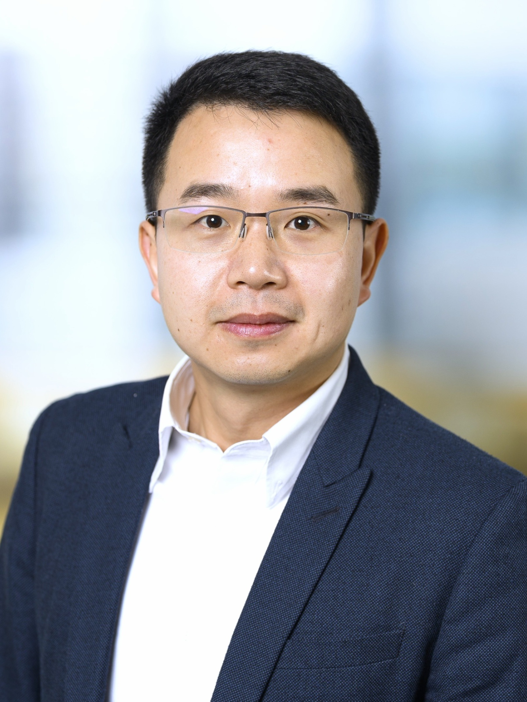

• Associate Professor at Delft University of Technology
• Expert on power electronics-based systems and battery management systems
• Founding Chair of IEEE Transportation Electrification Council Benelux Chapter
• Dutch National Member of Cigre WG B4.101 Grid Forming Energy Storage Systems
• Technical Program Chair in IEEE- PEDG2024, PEDG2023, ISIE2020, COMPEL2020
• Associate editor of IEEE TPEL, TIE, JESTPE
• MyCV
Email:z.qin-2@tudelft.nl, zqi@ieee.org
2026
[Honour] Great News! Our Dr. Zhengzhao Li has successfully defended his PhD thesis and got Cum Laude. Congratulations! His thesis is titled Solid-State Transformers for Large-Scale H2 Electrolyzers. Check it out
2025
[Grant] Great News! Dr. Qin as PI has received one million Euro funding from NWO for his project on BATT-AI. The project aims to empower battery energy storage systems with AI for better grid services both technically and economically. Check it out
[Education] Great News! The newly developed online course Battery Management Systems (BMS) and Pack Design led by Dr. Qin is launching in April. Sign it up now
[Tutorial] Dr. Qin and our former PhD Dr. Lu Wang will give a tutorial in EPE 2025, Paris, on the topic of EV Charging. Have fun!
[Publication] Recently, we researched on how to reduce the grid fee of EV charging stations by integrating energy storage into it. We have quantified the results with a Dutch case. The work is published on eTransportation. Check it out Techno-economic analysis of energy storage systems integrated with ultra-fast charging stations: A dutch case study
[Scholarship] Our Postdoc Junjie Xiao has got grant from Swiss National Centres of Competence in Research (NCCRs) to support his visit at ETH Zurich. Congratulations!
2024
[Service] Dr. Qin is appointed as an associate editor of IEEE Transactions on Power Electronics
[Award] Our article on Grid Impact of EV Charging has won the IEEE Open Journal of Power Electronics, Prize Paper Award, Honorable Mention, 2020~2023
[Publication] Our overview Grid integration of offshore wind power: standards, control, power quality and transmission has been accepted by IEEE Open Journal of Power Electronics. It is a collaboration with Siemens Gamesa (OEM), Shell (Developer), NREL, and University of Strathclyde. Enjoy reading!
[Publication] Zhengzhao's paper A Data-Driven Model for Power Loss Estimation of Magnetic Materials Based on Multi-Objective Optimization and Transfer Learning has been accepted by IEEE Open Journal of Power Electronics. Congratulations! The article shares the details of our work in MagNet Challenge 2023, where we won the 2nd place. Enjoy reading
[Publication] Zhengzhao's paper Medium-Voltage Solid-State Transformer Design for Large-Scale H2 Electrolyzers has been accepted by IEEE Open Journal of Power Electronics. Congratulations!
[Service] IEEE Benelux Section Transportation Electrification Council Chapter has been formed since 28 July 2024, and Dr. Qin is the founding chair
[Award] Our team has won the Excellent Innovation Award, 2nd Place, in the IEEE International Challenge in Design Methods for Power Electronics. Cheers! Details of the challenge can be found here. In the challenge, we use AI to improve the accuracy of the power loss model for magnetic components. We are in the procedure to publish our results. Stay tuned!
[Service] Dr. Qin is invited to serve as a guest AE for the JESTPE special issue on Design and Validation Methodologies for Power Electronics Components and Systems
[Service] Dr. Qin is appointed as an associate editor of IEEE Journal of Emerging and Selected Topics
[Grant] The EU Horizon project ECS4DRES is granted. I will hire a PhD or PostDoc to study grid-forming energy storage systems. Send me your CV and a motivation letter if you are interested in the position
[Service] Dr. Qin is invited to serve as a guest AE for the JESTPE special issue on Power Electronics Role in Future Renewables and Power-to-X Systems. You are welcome to submit your work. Check out the CFP
[Promotion] Dr. Qin is promoted to an associate professor at TU Delft, starting from 1st Feb, 2024
2023
[Project] Dr. Qin attended the final review of the H2020 project Progressus in Bari, Italy. In the project, we delivered two PhD students, models for power quality in EV charging, and 50 kW wireless power transfer technology. Together with more than 20 parters from EU, we satisfied the reviewers. More details of our research outcomes can be found here
[Publication] My phd student Lu's paper A Gradient-Descent Optimization Assisted Gray-Box Impedance Modeling of EV chargers has been published on IEEE Trans Power Electronics. Congratulations!
[Publication] My phd student Junjie's paper A Resilience Enhanced Secondary Control for AC Micro-grids has been published on IEEE Trans Smart Grid. Congratulations!
[Patent] Our two patents are granted. One is on a power router, and the other is on a resonant converter that can be used to efficiently convert low voltage to medium voltage. Feel free to contact me if you are interested.
[Project] Our project on the power quality of heavy-duty truck charging hubs has started. The project is sponsored by Shell
[Webinar] Dr. Qin has given a webinar in Benelux IEEE PELS/IAS/PELS Joint Chapter Technical Webinar Series. POWER QUALITY IN ELECTRIC VEHICLE CHARGING NETWORKS
[Tutorial] Dr. Qin has given a tutorial on EV Charging Technologies in EPE 2023, Aalborg, Denmark
[Service] Dr. Qin is invited to serve as a technical program chair in IEEE-PEDG 2024, Luxemburg
[Tutorial] Dr. Qin has given a tutorial on EV Charging Technologies in ICPE 2023, Jeju, South Korea, together with colleagues from TU Delft
• IEEE Open Journal of Power Electronics, Prize Paper Award, Honorable Mention, 2020~2023. (3 papers out of 258 articles got the award)
• IEEE International Challenge in Design Methods for Power Electronics Excellent Innovation Award, 2nd Place, 2023. (40 international university teams over the world participated)
• Two papers are selected for the Featured Articles from IES Journals. (40 papers from more than 10000 are selected)
• IEEE-TIE’s Distinguished Reviewers for the year 2020
• World’s Top 2% Scientists, since 2022
• Invited Talk at Hitachi Energy, 2025
• Panelist at Sungrow Charging Summit, Amsterdam, 2025
• Invited Speaker at China Power Supply Society Webinar, 2025
• Invited Speaker, Sungrow Central Research Institute, Hefei, 2025
• Invited Talk at IEEE 9th Southern Power Electronics Conference (SPEC 2024)
• Invited Talk at IEEE 20th International Power Electronics and Motion Control Conference (PEMC 2022)
• Invited Talk at 2023 IEEE PLES/IAS/PES BENELUX Joint Chapter Webinar
• Invited Speech at 2022 European Distributed Energy Resources Laboratories (DERlab) Knowledge Day
• Invited Speech at 2022 Huawei Digital Power Webinar
• Invited Talk at 2021 ElaadNL EV Charging Best Practices and Power Quality Webinar
• Invited Speech at the Department of Energy, Aalborg University, 2024
• Tutorial at IEEE EPE 2025&2023, IEEE ECCE Asia 2023, IEEE PEDG 2022